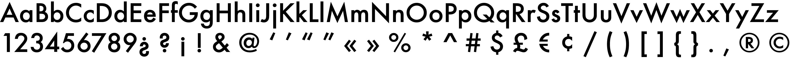
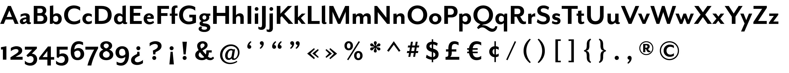

Futura Vs Mr Eaves Sans
Futura
History of Typeface
Designed by Paul Renner and released in 1927. Created in Germany, Futura was developed as a contribution to the New Frankfurt project, a radical housing in Frankfurt that many modernist architects at the time were involved in. Futura was released to stand out against sans-serif and handwritten-style typefaces that were popular at the time, in order to promote simplicity and modernism.
Examples
Mr Eaves Sans
History of Typeface
Mr Eaves is the sans-serif companion to Mrs Eaves, one of Emigre’s classic typeface designs. Created by Zuzana Licko in 2009, this addition to the Emigre Type Library expands the versatility of the original Mrs Eaves with two complementary families: Mr Eaves Sans and Mr Eaves Modern.
Examples

Comparison
In this graphic, Futura is represented in the left letter and Mr Eaves Sans is represented in the right letter in each column. As we can see, Mr Eaves Sans has more curvature and flourish than Futura does. Futura has an appearance that embodies efficiency and forwardness, following a more geometric form that incorporates triangles, squares, and especially the circle. Mr Eaves Sans on the other hand has generous built-in line spacing due to a small x-height and extended ascenders and descenders, rendering a kind of lightness and airiness.